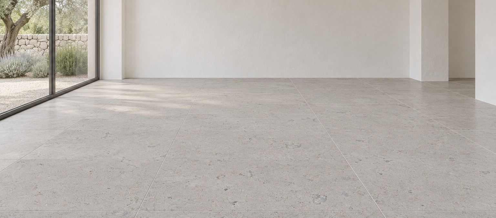

Απεικόνιση · ματ δάπεδο
Ασβεστόλιθος · Σινά, Αίγυπτος
Sinai Pearl
Μπεζ-γκρι ασβεστόλιθος με μικρά απολιθώματα, και το πιο ζητημένο δάπεδο της γκάμας. Με αμμοβολή αποκτά λεπτή, ομοιόμορφη πρόσφυση, οπότε ταιριάζει σε βεράντες και γύρω από πισίνες όσο και σε εσωτερικούς χώρους. Πωλείται και ως Triesta.
Διάθεση
Φινιρίσματα
Γυαλιστερό, ματ, βουρτσιστό, αμμοβολή, μπουσαρδέ, παλαιωμένο με οξύ, τροχισμένο
Εφαρμογές
Εσωτερικά και εξωτερικά δάπεδα, περιβάλλον πισίνας, σκάλες, τοίχοι, προσόψεις, πάγκοι
Όγκοι
Ναι
Πλάκες
Έως 300 × 195 cm
Πλακίδια
Κοπή στα μέτρα
Πάχος
1 – 20 cm
Ακμές
Πριονιστές, παλαιωμένες ή στρογγυλεμένες κατόπιν αιτήματος
Τυποποιημένα πλακίδια
40 × 60 · 60 × 60 · 60 × 80 cm, πάχος 2 cm
Καλό να γνωρίζετε
Τα φινιρίσματα βουρτσιστό, αμμοβολή και μπουσαρδέ δίνουν φυσική αντιολισθητική επιφάνεια για χώρους πισίνας και εξωτερικά δάπεδα· οι γυαλιστερές πλάκες προορίζονται για εσωτερικούς χώρους. Ο τόνος διαφέρει ανά όγκο· τα δείγματα ταιριάζονται πριν την κοπή. Σκάλες, στέψεις, κυβόλιθοι και επένδυση σχιστής όψης κατόπιν αιτήματος.
Τεχνικά στοιχεία
Αντοχή σε θλίψη
156 MPa
Αντοχή σε εφελκυσμό
14 MPa
Αντοχή σε τριβή
26.5 Ha
Πυκνότητα
2 567 kg/m³
Υδατοαπορρόφηση
1.31 %
Τιμές δοκιμών από το Egyptian Export Council. Η φυσική πέτρα διαφέρει από όγκο σε όγκο· επισκεφθείτε την αυλή για να δείτε την πέτρα πριν παραγγείλετε.

Πραγματική επιφάνεια
Μάρμαρο & Ασβεστόλιθος